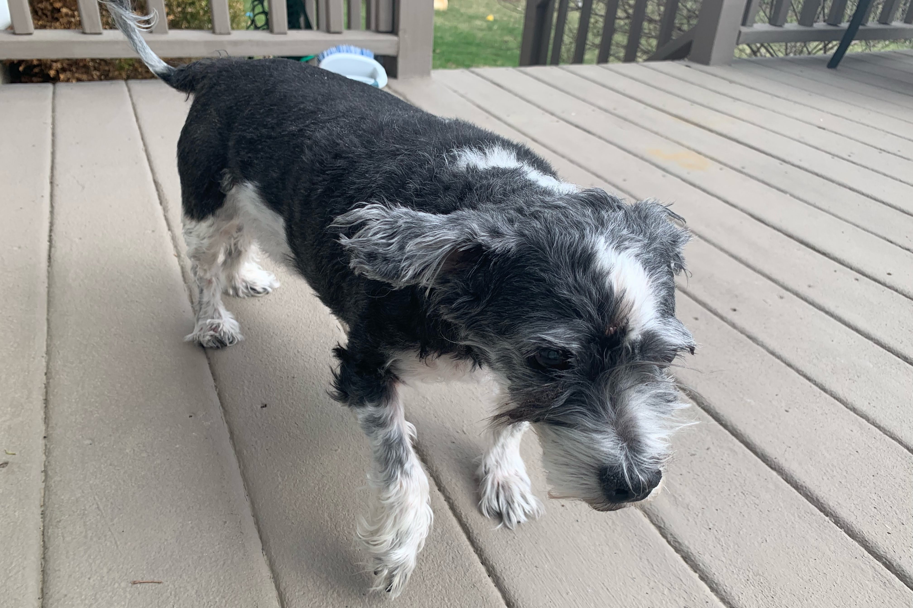

Flat-Coated Goldendoodle

Flat-coated Goldendoodles have the body shape of a Poodle but they lack the beard and eyebrows, known as “furnishings”, around their face.
- Parents: Golden Retriever + Poodle
- Average Weight: 55-75 lbs
- Average Lifespan: 11 years
- Hypoallergenic? Sometimes
Goldendoodles are kind, trusting, and gentle. These traits make them very poor guard dogs, but excellent family dogs.
Shih-Poo

Shih-poos were bred to mix the Poodle's hypoallergenic coat with the Shih Tzu's loyal, spirited character.
- Parents: Shih Tzu + Toy Poodle
- Average Weight: 8-18 lbs
- Average Lifespan: 16 years
- Hypoallergenic? Yes
Shih-Poos are friendly, playful, and protective. They are the size of a lap dog, and they enjoy taking long naps in their owners' laps.
Maltipoo
Maltipoos come in a variety of colors, including a combination of brown, black, and white. They were originally bred in the United States.
- Parents: Maltese + Toy Poodle
- Average Weight: 5-20 lbs
- Average Lifespan: 10-15 years
- Hypoallergenic? Yes
Maltipoos are affectionate and gentle. They are considered excellent family (and therapy!) dogs due to their loving personality.